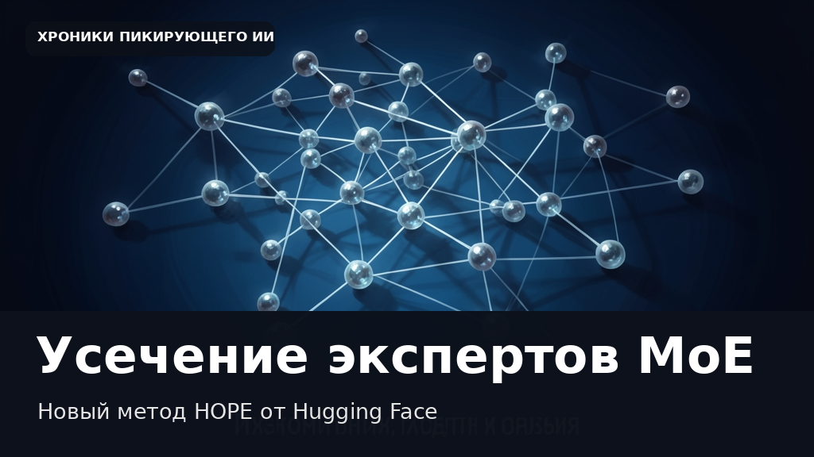

Hugging Face представила HOPE: метод усечения экспертов для языковых моделей
Этот текст и иллюстрация созданы автоматически. В статье могут быть неточности; это не опубликованная редакционная новость.

Архитектура Mixture-of-Experts (MoE) позволяет масштабировать языковые модели до сотен миллиардов параметров, однако у неё есть существенный недостаток. На этапе генерации текста каждый экспертный модуль должен удерживаться в памяти, хотя для обработки конкретного токена используется лишь небольшая их часть. Например, в модели Qwen3.5-122B задействовано 256 экспертов в каждом слое, но 95% памяти занято ими целиком, в то время как активируются всего 8. Самый прямой способ решения этой проблемы — перманентное удаление наименее полезных экспертов. Предыдущие методы оценивали каждого эксперта независимо с помощью скалярной метрики важности на калибровочном датасете. Однако такой подход упускает из виду, что эксперты формируют стабильные кооперативные группы и работают совместно. Игнорирование этих взаимодействий приводит к ухудшению качества работы модели, особенно при агрессивном сокращении. Новая разработка команды Hugging Face под названием HOPE (Higher-Order-Pruning of Experts) учитывает попарные взаимодействия между экспертами. Метод основан на вычислении специального суррогата, который аппроксимирует ошибку усечения с учетом того, как удаление одного модуля влияет на остальные. При усечении половины экспертов HOPE демонстрирует лучшие результаты среди аналогов, обеспечивая заметный прирост точности на задачах агентного программирования по сравнению с традиционными методами.
Дата объявления в RSS: 2026-11-09. Дата черновика: 2026-11-09.